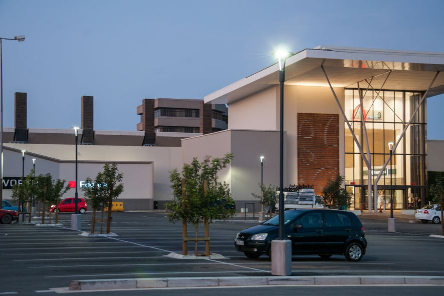
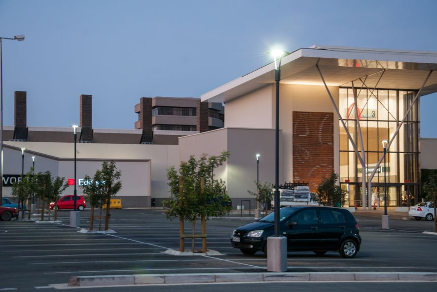

Greenacres, one of Port Elizabeth's biggest Shopping Centres, opened its glass doors on 22 October 1981. More than three decades on, the shopping Centre is still regarded as one of the prime shopping destinations in The Bay. Centrally located, its unique appeal is enhanced by a tenancy that includes reputable national retailers who, together with family businesses, have served the community for decades. Greenacres Shopping Centre, with its "showcase" type shops attracts over a million shoppers a month. The Centre boasts amenities to make the entire family's shopping experience a memorable and pleasurable one. There are spacious and delightfully decorated baby rooms as well as wheelchairs for the disabled. Greenacres Shopping Centre still remains the shopping destination of choice.

 
